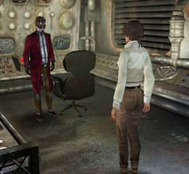
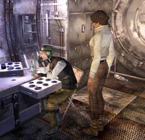

| 概要 | 地図 | |
| 淡いヒント集 | ヒント集 | 的確なヒント集 |
| 攻略最短ルート | Syberia 攻略へ |
| << 前の段階へ | 地域選択へ | 次の段階へ >> |
コムコルツグラッド
工場内部

・この区画はここが行き止まりである。 ・どこか別な場所に行く方法はないのか? ・調べると看板がある。この看板には意味があるのか?
ここの最高権力者
 ・彼はどこにいるか? ・彼の願いは何か? そして、その願いをかなえる方法はあるのか? ・オスカーの腕をどうやったら返してもらえるのか? ・彼は何か重要なことを知っているか?
大佐
 ・彼はどこにいるのか? ・彼は酔っている。どうしたら、重要な情報を聞き出せるか? ・あなたがここへ来たとき、それを記念に大佐は何かを使おうとした。それはどこにあるのか? ・この部屋には何か重要な品はあるのか?
気絶した大佐

・あくまでも、気絶しているだけだ。死んではいない。 ・どうしたら起こすことができるのか? ・映画で気絶した人間が目覚めさせるやり方として、水をかけるものがあったはずだ。 |
| << 前の段階へ | 地域選択へ | 次の段階へ >> |
| 概要 | 地図 | |
| 淡いヒント集 | ヒント集 | 的確なヒント集 |
| 攻略最短ルート | Syberia 攻略へ |
Syberia
| 目次へ戻る | ページの上部へ |